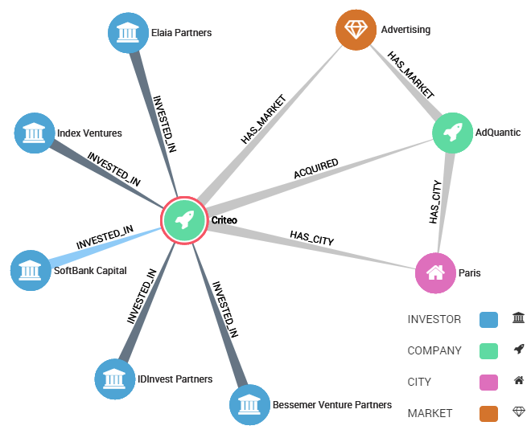

Linkurious helps you to visually explore a graph database. In this demo we offer you the ability to explore the connections between startups of the SF Bay area.
The data is a sample of Crunchbase™. It is a graph of companies linked to market sectors, cities, and investors. Companies may be bound by an acquisition or an investment. See an example below that displays the neighborhood of a company.
